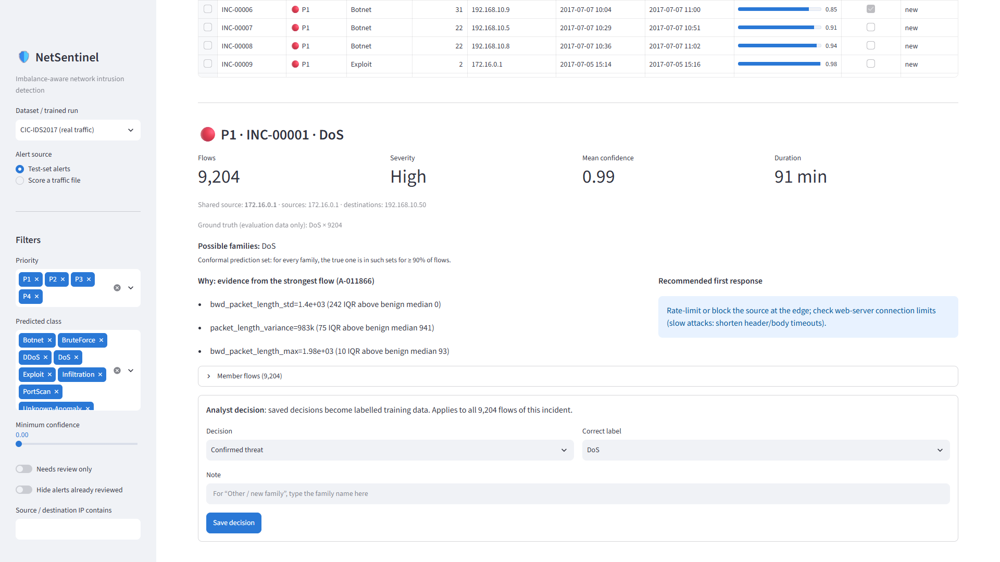

10 · INSIDE AN INCIDENT

WHYthe features furthest from normal traffic
HOW SUREpossible families, a 90% guarantee for each (conformal prediction)
WHAT TO DOa recommended first response
THE LOOPone decision labels all 9,204 flows, the model retrains on them